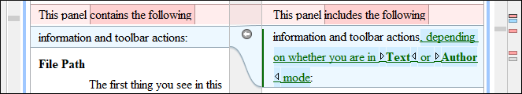

Merging Proposed Changes
Once the Reviewers are done with their process, as the Content Author, you will have access to a Get Changes link when hovering over the task in the Content Fusion Tasks Manager view. Clicking this link opens a built-in Get Changes merge tool that allows you to automatically merge all the proposed changes back into Oxygen XML Editor/Author.
In most instances, you will simply click the Apply button at the bottom of the merge tool to automatically integrate all the proposed changes and when the files are opened in Oxygen XML Editor/Author, you will see the changes. As long as you kept the Force Change Tracking On option selected in Oxygen XML Editor, you will have the ability to accept or reject the changes. If you happen to encounter a conflict, you will need to select a Merge Action from the drop-down menu for that particular file.
If you need to resolve conflicts or make some manual changes to the merge process, refer to the next section for more in-depth information on using the built-in Get Changes merge tool.
Get Changes Merge Tool
When you click the Get Changes link on a task, a built-in merge tool is displayed that allows you to automatically integrate the changes and you also have access to numerous actions to manually adjust the merge.
The merge tool includes the following information, features, and actions:
- Number of Changes and Conflicts
- The first thing you see in top-left corner of the tool is the grand total of all the changes made by others, changes made by you, and the number of conflicts.
- Filter Buttons
-
In the top-right corner you can use the toggle buttons to filter the list of modifications:
 Show all
files
Show all
files- Use this button to show all modified and unmodified files, as well as conflicts.
 Show only files with
incoming and local changes
Show only files with
incoming and local changes- Filters the list to show all files that have been modified, including conflicts.
 Show only files
with incoming changes
Show only files
with incoming changes- Filters the list to only show the files that were modified by others.
 Show only files
with local changes
Show only files
with local changes- Filters the list to only show the files that were modified by you.
 Show only
conflicting files
Show only
conflicting files- Filters the list to only show files that contain conflicts.
- List of Files Panel
-
This panel shows the list of files in the compared file sets based upon the filter button that is selected. This panel includes the following sortable columns:
- Name - The file names.
- Status - An icon that represents the file status. Red icons indicate some sort of conflict. Gray icons indicate modifications made by you. Blue icons indicate modifications made by others.
- Description - A description of the file status.
- Merge Action - This column provides a drop-down menu for each file that allows you to choose some merge actions depending upon its status. A default action is always set to automatically merge the changes made by others with your changes. If there is a conflict, the default is <Select action> and you are required to make a selection. Click this column to access the drop-down menu where you can make a selection. The same actions are available in the contextual menu.
You can click a file to open it in the file comparison panel (the file from your file set is shown in the left panel while the file from the file set with changes made by others is shown in the right panel). For image files, the comparison panel shows a preview of the image. For other binary files, a preview is not available and you will just see its status.
- File Comparison Panels
-
If you click a file in the top panel, the file is opened in this file comparison section. The file from your file set is shown in the left panel and the file from the other file set is shown in the right panel. This panel includes a variety of toolbar actions, depending on whether the merge tool is in Text or Author mode. To determine whether the files are initially opened in the merge tool's Text or Author mode, it detects the Initial Edit Mode in the Document Type Association configuration and the mode the files were last opened in Oxygen XML Editor/Author.
-
The information and actions that are available in the file comparison section are as follows:
- File Path
- The first thing you see in this panel is the file path where merge actions will be applied if you make changes.
 Close
Close- Closes the file comparison panel.
- Algorithm Drop-Down Menu
- This drop-down menu allows you to select one of the following diff
algorithms to be used for file comparisons:
- Auto - Selects the most appropriate algorithm, based on the compared content and its size (selected by default).
- Lines - Computes the differences at line level, meaning that it compares two files or fragments looking for identical lines of text. This algorithm is not available when the merge tool is in Author mode.
- XML Fast - Comparison that works well on large files or fragments, but it is less precise than XML Accurate.
- XML Accurate - Comparison that is more precise than XML Fast, at the expense of speed. It compares two XML files or fragments looking for identical XML nodes.
 Diff
Options
Diff
Options- Opens a preferences page where you can configure various options.
 Perform Files
Differencing
Perform Files
Differencing- Looks for differences between the two files displayed in the left and right side panels.
 Synchronized scrolling
Synchronized scrolling
- Toggles synchronized scrolling. When toggled on, a selected difference can be seen in both panels.
 Ignore
Whitespaces
Ignore
Whitespaces- Enables or disables the whitespace ignoring feature. Ignoring whitespace means that before performing the comparison, the application normalizes the content and trims its leading and trailing whitespaces. This option is not available when the merge tool is in Author mode.
 Tags Display
Mode
Tags Display
Mode- Allows you to select the amount of markup to be displayed in the
Author visual mode. You can choose between:
 Full Tags with Attributes,
Full Tags with Attributes,
 Full
Tags,
Full
Tags,  Block Tags,
Block Tags,  Inline
Tags,
Inline
Tags,  Partial Tags, or
Partial Tags, or  No
Tags.
No
Tags.  Copy Change from
Right to Left
Copy Change from
Right to Left- Copies the selected difference from the file in the right panel to the file in the left panel.
 Copy All
Changes from Right to Left
Copy All
Changes from Right to Left- Copies all changes from the file in the right panel to the file in the left panel.
 Next Block of Changes
Next Block of Changes- Jumps to the next block of changes. This action is not available when the
cursor is positioned on the last change block or when there are no
changes.Note: A change block groups one or more consecutive lines that contain at least one change.
 Previous Block of Changes
Previous Block of Changes- Jumps to the previous block of changes. This action is not available when the cursor is positioned on the first change block or when there are no changes.
 Next
Change
Next
Change- Jumps to the next change from the current block of changes. When the last change from the current block of changes is reached, it highlights the next block of changes. This action is not available when the cursor is positioned on the last change or when there are no changes.
 Previous Change
Previous Change- Jumps to the previous change from the current block of changes. When the first change from the current block of changes is reached, it highlights the previous block of changes. This action is not available when the cursor is positioned on the first change or when there are no changes.
 First
Change
First
Change- Jumps to the first change.
- Left-Side File (Your changes)
- Above the panel you can see the file path and the following two buttons:
-
 Save
Save- Saves changes made to the file.
 Reload
Reload- Reloads the file.
- Right-Side File (Changes made by others)
- Above the panel you can see the file path and the following two buttons:
-
- Reload
- Reloads the file.
- Displaying Differences in the File Comparison Panels
-
Colored marks on the right-side vertical stripe help you to quickly identify the locations of the differences. The differences are also highlighted in several colors in the comparison panes, depending on the type of change, and dynamic lines connect the compared fragments in the middle section between the two panes. The default colors and their shades mean the following:
- Pink - Identifies modifications on either side.
- Gray - Identifies an addition of a node in the left side (your outgoing changes).
- Blue - Identifies an addition of a node in the right side (incoming changes).
- Lighter Shade - Identifies blocks of changes that can be merged in their entirety.
- Darker Shade - Identifies specific changes within the blocks that can be merged more precisely.
Figure 2. File Comparison Panels  - Direct Editing Actions in the File Comparison Panels
-
In addition to selecting merge actions from the drop-down menus in the Merge Action column in the top panel, you can also edit the files directly in the left pane (your local changes). The two editors are constantly synchronized and the differences are refreshed when you save the modified document (
Save button or
Ctrl+S) or when you click the
 Perform File
Differencing button.A variety of actions are available in the contextual menu in both editing panes. The tool also includes some inline actions to help you merge, copy, or remove changes. When you select a change, the following inline action widgets are available, depending on the type of change:
Perform File
Differencing button.A variety of actions are available in the contextual menu in both editing panes. The tool also includes some inline actions to help you merge, copy, or remove changes. When you select a change, the following inline action widgets are available, depending on the type of change: Append right change to left
Append right change to left- Copies the content of the selected change from the right side and appends it on the left side.
 Copy change from right to left
Copy change from right to left- Replaces the content of a change in the left side with the content of the change in the right side.
 Remove
change
Remove
change- Removes the change from the left side.
Any time you save manual changes (
Save button or Ctrl+S),
the selection in the Merge Action column in the top panel
automatically changes to Use merged and a copy of the original file is kept
so that you can revert to the original file if necessary. To discard your manual
changes and revert to your original changes, select a different action in the
Merge Action drop-down menu. - Text Mode
- The Text button below the comparison panels allows you to switch to a Text mode that displays the files as source code.
- Author Mode
- The Author button below the comparison panels allows you to
switch to an Author mode that displays the files in a visual
mode similar to the Author editing mode in Oxygen XML
Editor/Author. This visual mode is available when the compared files are
detected as being XML and it includes unique features such as a Tags Display Mode drop-down
button on the toolbar that allows you to select the amount of tags to display
in this visual mode. This mode also presents differences that were made using the
Track Changes feature (although the Track
Changes feature is not available in the merge tool).Note: This mode is not available if the Enable file comparison in Author mode option is not selected in the preferences page.
- Open Merged Files
- If you select this option, all the files that will be modified by the merge operation will be opened in the editor after the operation is finished.
- Applying Changes
-
When you click the Apply button, all the merge actions you have selected and the changes you have made will be processed.
If there are unresolved conflicts (conflicts where no merge action is selected in the Merge Action drop-down menu), a dialog box will be displayed that allows you to choose how to solve the conflicts. You can choose between the following:- Keep your changes - If you select this option and then click Apply, your local changes will be preserved for the unresolved conflicts.
- Overwrite your changes - If you select this option and then click Apply, your local changes will be overwritten with the changes made by others, for the unresolved conflicts.
- Cancel - You can click the Cancel button to go back to the merge tool to resolve the conflicts individually.
- Canceling Changes
- If you click the Cancel button at the bottom of the merge tool, any manual changes you made in the merge tool will be lost.